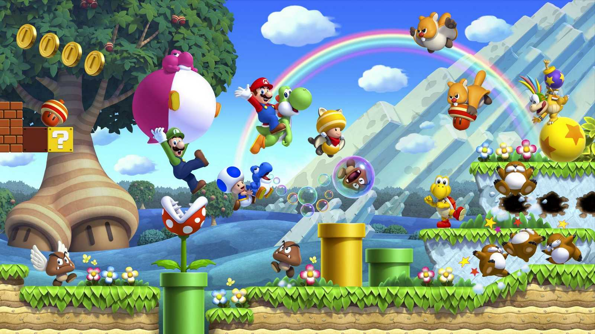

Yoshi
Le fidèle compagnon de Mario de Yoshi’s Island a une personnalité gentille et accommodante. Il possède une longue langue, qu'il utilise pour avaler des fruits et des ennemis entiers - et pond ensuite des œufs!Team

Mario
Directeur de Campagne, Mario gère tous les personnages travaillant pour notre futur président... Yoshi !

Peach
Chargée de la Communication, Peach doit faire connaître Yoshi au monde entier.
Une rôle très important !

Daisy
Porte Parole de Yoshi, Daisy est chargée de diffuser ces idées au grand public quand il n'a pas la possibilité de le faire.

Luigi
Conseiller Technique, Luigi est là pour superviser les travaux de Yoshi Island.
La plomberie n'a aucun secret pour lui !

Toad
Militant, Toad est très impliqué dans la campagne de Yoshi. Son rôle est de donner envie à la population de voter lui.
Et il y arrive très bien !

Waluigi
Journaliste, Waluigi accompagne Yoshi lors de ses déplacements pour raconter ce qui se passe, poser des questions...